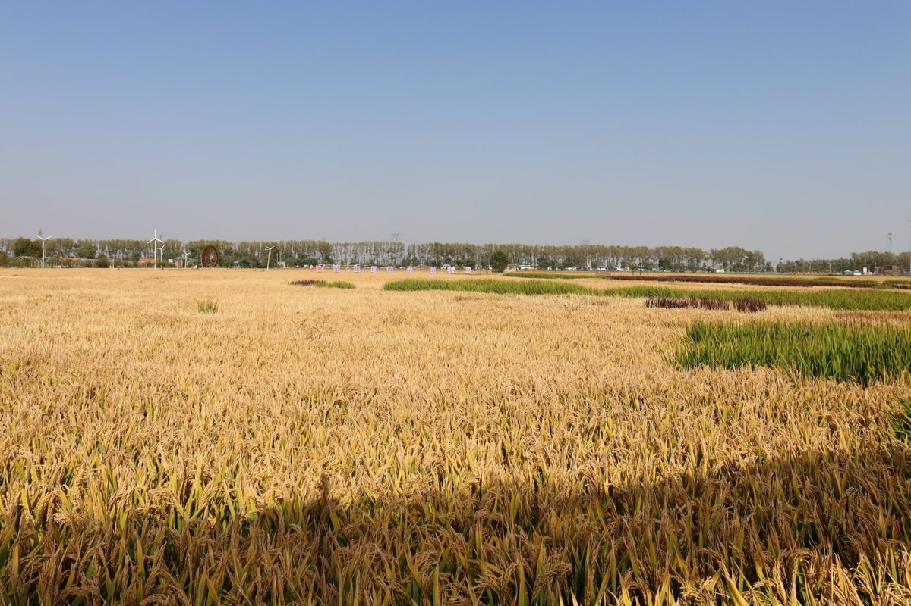
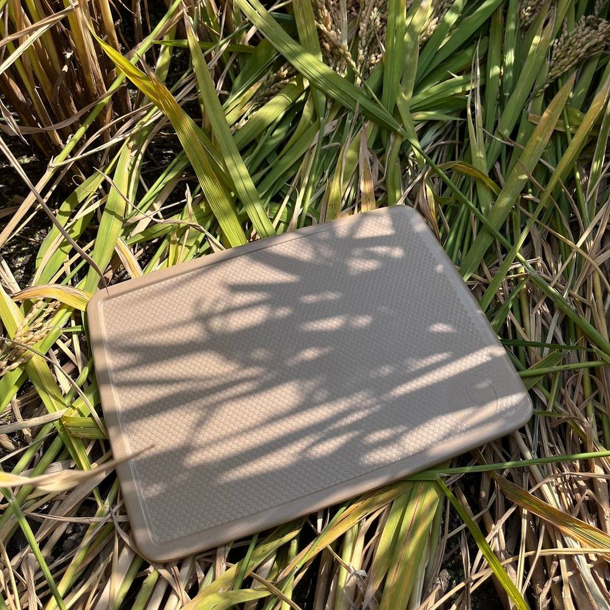
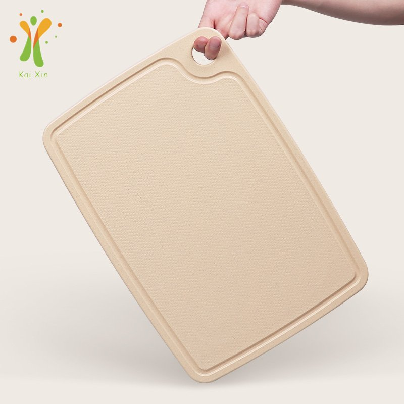
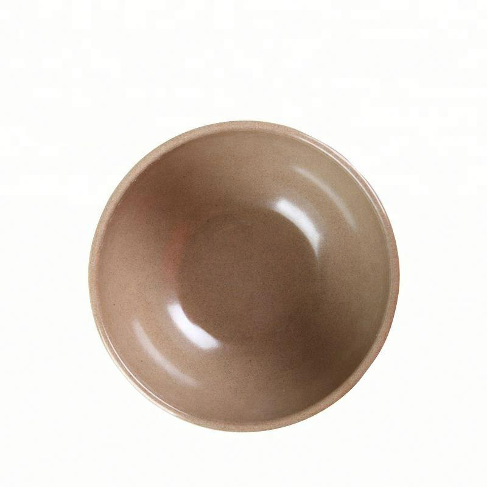
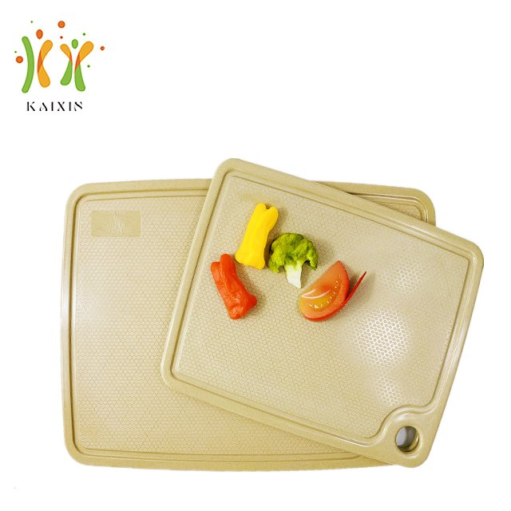

Most pages in this category describe the material with three adjectives and no numbers. This one is the opposite: composition, the documents behind the food-contact claim, the temperature and washing envelope, and the cases where we tell buyers to choose something else. If you only read one page before requesting samples, read this one.

These are the numbers we work to. Anything a supplier cannot put in a table like this is worth questioning.
| Property | What it means in service |
|---|---|
| Base material | Rice husk — the hull left after rice milling — ground to roughly 80 mesh. |
| Binder | Food-grade starch. No melamine, no BPA, no plastic resin in the compound. |
| Forming | Heat pressing at 180 °C and above, at press force around 200 tonnes, which is what gives the material its density. |
| Temperature window | −30 °C to 120 °C in normal service. Not for open flame, ovens or stovetops. |
| Washing | Hand washing, or a home dishwasher on a normal cycle. Industrial dish machines are not recommended. |
| Microwave | Short reheating on low power, 3–5 minutes. Never run empty. |
| Service life | Three to four years of daily use is typical, washing method aside from industrial machines. |
| Surface | A natural rice-bran wax sheen from pressing, not a coating. Small dark flecks are husk fiber, not defects. |
| Food contact | SGS tested. Full report sent on request, with report number and sample description. |
Rice husk tableware is a composite of agricultural byproduct and a binder. The husk is milled to a fine, consistent mesh; the binder holds the fiber together and is food-grade starch. That is the entire recipe — there is no melamine resin, no polypropylene and no BPA in the compound.
This is why the material behaves differently from plastic lookalikes. It is denser than molded fiber packaging, heavier in the hand than PP, and it has a matte, slightly waxy surface that comes from the rice bran fraction during pressing rather than from a sprayed finish. Run a fingernail across it and you feel material, not coating.
The visible consequence is the small dark specks scattered through the surface. Buyers sometimes send photos asking whether it is contamination. It is husk fiber — the same input that makes the product what it is. If a supplier ships you a perfectly uniform, speck-free piece at this price point, ask what is in it.

Six stages, each of which is a place where a cheaper factory cuts a corner that shows up in your customers' hands six months later.
| Stage | What happens, and why it matters |
|---|---|
| 1. Collection | Husk is collected from rice mills near the plant. It is a byproduct stream, so the supply is seasonal and quality varies by harvest. |
| 2. Cleaning and milling | Husk is cleaned of stone and dust, then ground to roughly 80 mesh. Coarser grind means weaker walls and a rougher surface. |
| 3. Compounding | Fiber and food-grade starch binder are blended to a fixed ratio. This is the step where a supplier quietly changes the recipe to save cost — and where dishwasher endurance and drop strength are decided. |
| 4. Heat pressing | Compound is pressed at 180 °C and above with press force around 200 tonnes. Under-cured parts look fine on the shelf and fail in service. |
| 5. Finishing | Edge trimming, deburring and surface polishing. Cheap finishing leaves sharp rims and visible parting lines. |
| 6. Inspection and packing | Weight, dimensions, surface, drop test and food-contact documentation per lot. Our process is documented on the factory page. |
If you want the longer version of this, the article from rice harvest to table walks the same process with photos.
A certificate is not a test report. One describes an audited system; the other measures a specific sample against a specific limit on a specific date. For food contact, you want the second.
The full list, with what each document covers and the current status of every line, sits on the quality and testing page.
This section is the reason buyers trust the rest of the page. A supplier who only lists strengths has not tested anything.
| Use case | Verdict | Detail |
|---|---|---|
| Hot food, boiling water, soup, coffee | Yes | Rated to 120 °C in normal service. No deformation or odor transfer in our testing. |
| Hand washing | Yes | The most reliable route in high-volume kitchens: warm water, mild detergent, dry upright. |
| Home dishwasher, normal cycle | Yes | Built for repeated domestic cycles. Avoid the heavy/pot cycle where the option exists. |
| Industrial dish machine (tunnel, conveyor, rack) | No | These wash at 60 °C and above with high-alkaline detergent. Heat and chemistry dull the surface and shorten service life. Tell us your machine, temperature and detergent before you specify. |
| Microwave reheating | Short bursts | 3–5 minutes on low power. Not for defrosting, not for long runs, never empty. |
| Oven, stovetop, open flame, air fryer | No | Direct dry heat above the service window will scorch and crack the material. |
| Heavy chopping on bone or frozen food | No | Chopping boards handle vegetables, fruit, cooked meat and normal knife work. Frozen blocks and cleavers belong on wood or HDPE. |
| Long soaking in dark sauces or turmeric | Rinse promptly | Natural fiber takes color over long contact. Wash and dry rather than leaving pieces submerged for days. |
Five materials, assessed on the things that actually decide a purchase: heat, washing, breakage, weight and what the customer sees.
| Material | Heat | Washing | Breakage | Weight & feel | Watch out for |
|---|---|---|---|---|---|
| Rice husk | to 120 °C | Home DW + hand | Low — chips, rarely shatters | Denser than PP, matte | Industrial dish machines; long soaking |
| Melamine | Lower ceiling; check per SKU | Generally machine-washable | Low | Hard, glossy, heavier | Heat limits; consumer perception of melamine |
| Polypropylene | High | Machine-washable | Low | Light, plastic feel | Stains, grays out, plastic story |
| Bamboo / wood | Low to moderate | Hand wash, dry fast | Low | Warm, natural | Porous — warps or molds if left wet |
| Ceramic | High | Machine-washable | High — chips and shatters | Heavy, premium | Freight weight and replacement costs |
Cost comparisons live in a separate piece: rice husk vs bamboo vs ceramic, the cost of ownership.
The main environmental value of this material is not what happens when you throw it away — it is that you do not throw it away. A piece in daily service for three to four years replaces hundreds of single-use items, and that arithmetic holds whether or not anyone composts it.
On disposal, we are deliberately careful. Compostability and biodegradability claims are certification-dependent: a product should only be marketed against a specific standard that the destination market recognises, with a certificate number behind it. We supply rice husk dinnerware as reusable tableware, and we do not ask buyers to make a compostability claim on our behalf.
What we can say concretely: the feedstock is an agricultural byproduct that would otherwise be burned or landfilled, and the finished piece is a durable composite rather than a coated paper product. Where local industrial composting accepts the material, that is a bonus your waste contractor can confirm — not a promise from us.

| Question | Why it separates suppliers |
|---|---|
| What is the fiber-to-binder ratio? | A supplier who cannot state it is guessing at strength and dishwasher endurance. |
| At what temperature and pressure is it pressed? | Under-cured parts pass a visual check and fail after a month of service. |
| Which SKU does the test report cover? | Reports are per material and sample, not per catalogue. |
| What is the recommended wash regime? | The answer should distinguish home cycles from industrial machines, as this page does. |
| What is the MOQ for stock and for custom? | Our split is published on the OEM and ODM page: 1,000 pcs for molded or printed logos. |
| Can we inspect the plant? | Third-party inspection by SGS, BV, TÜV or Intertek is accepted — details on the quality page. |
Nineteen articles sit behind this page, grouped into three clusters. Start with the one that matches your question.

What rice husk tableware is, how it differs from molded fiber and plastic, and the questions to ask first.
Start here →
Supplier selection, MOQ, container loading, sample testing and the cost-of-ownership math.
Read the sourcing cluster →
EU PPWR, UK hospitality rules, US café switches and what they mean for buyers of reusable dinnerware.
Read the market cluster →Product-specific detail lives on the product pages — chopping boards, coffee cups, tumblers, bowls and kids sets.
Tell us the items, the destination market and how your kitchen washes. We reply with the specification, the food-contact documents that apply, MOQ for stock and custom, and a sample plan — usually within one working day.